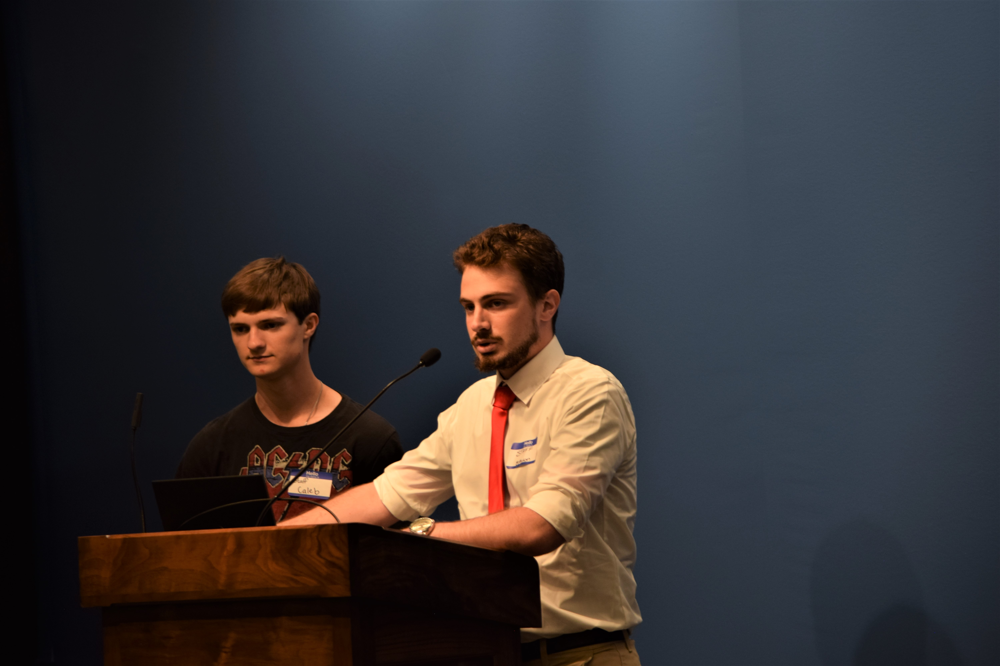
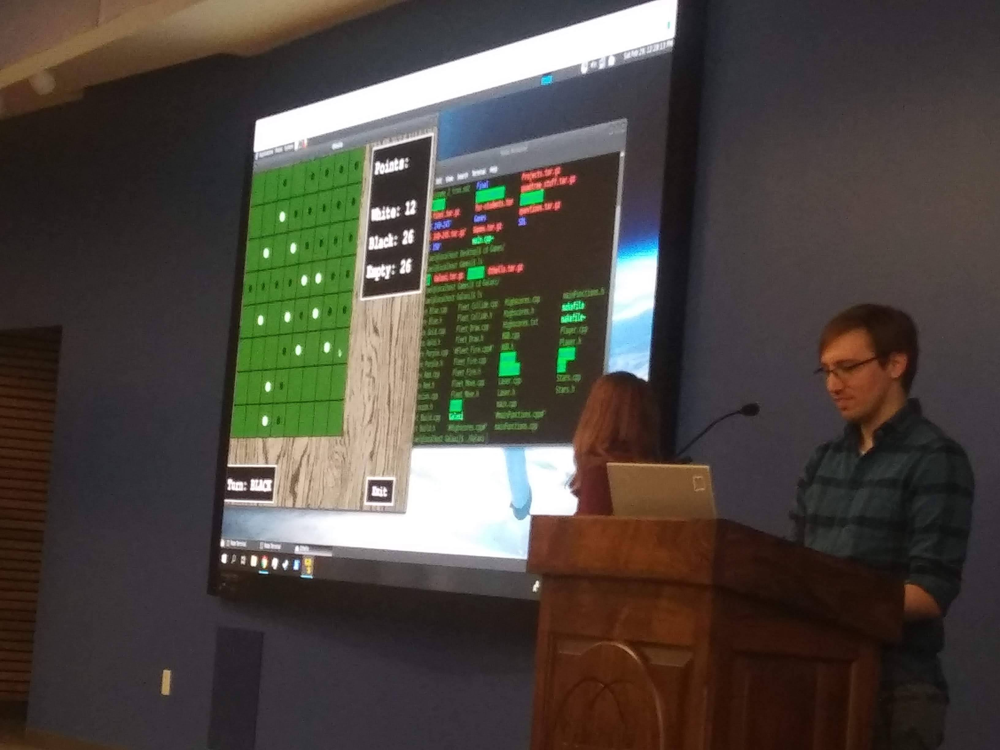

Home | CCCS | CCCS Discord
CCCS Discord
History of CCCS Discord
A bit about the history of CCCS Discord https://discord.gg/UDCX6wF ...
In March 2020, because of covid-19, CC announced campus shutdown.
Everyone must leave campus on the Friday one week before springbreak.
All classes will continue virtually after springbreak.
Furthermore CC will continue virtually into the next academic year
and (of course)
there was no definite plan for when CC will be in-seat-in-person again.
Two things happen right away.
We had a last-minute CS jam on 03/13/2020 and
the CS club officers decided to create CCCS Discord.
CCCS Discord was created by Brandon, Caleb, Michael in March 2020.
Messages from our google group on setting up CCCS Discord are below.
Here are some snippets:
- Braydon: “... the campus is shutting down ... this will effect hangout hours ... Right now I’m think a discord server will be our best option ...”
-
Michael: “... disruptive for a lot of us, especially for those who have come to rely on the support structure of the CS club for
tutoring in Math and Computer Science ...
We will be setting up a discord server ... that will allow us to remain in contact and provide an open forum for students ...”
The following from cc_cs@googlegroups.com
are the messages (dated 2020/03/13 - 2020/03/19)
leading up to the creation of CCCS discord:

Braydon Hampton blhampton1@cougars.ccis.edu Mar 19, 2020, 2:40:52 PM
to cc_cs@googlegroups.com
Subject: Hangout Hours and Discord kickoff
Hey all,
Hope you are doing well. Today we will be continuing hangout hours per our normal schedule:
MWF: 4:30-6:30
TTh: 3-5
This will be happening via discord.
Invite link:
https://discord.gg/fPYEda
(Note this invite expires after a day)
It would be a lot of help if you all could make it so we can playtest hangout hours and see what changes may need to happen for the discord channel.
It’s going to take a group effort of supporting one another to finish out this semester strong, so let’s make due with what we’ve got and work together!
--
Thanks,
Braydon Hampton
Liow, Yihsiang yliow@ccis.edu Tue, Mar 17, 2020 at 12:10 PM
to cc_cs@googlegroups.com
Subject: CCCS discord server for online chat & video conf & pair programming
We are setting up discord for everyone to interact socially and also to chat about CS courses (programming, theory, math, etc.) Discord has text chat and video conferencing. It also has screen share which will help in chatting about program code.
- Google and install discord. https://discordapp.com/. You can use a web browser, but it’s probably faster if you use download install the app.
- Create an account.
- Run discord and use the following https://discord.gg/yrssjGb to get to CCCS discord.
If you have problems doing any of the above, post to cc_cs@googlegroups.com.
Right now we’re trying to figure out how to set up the channels, how to interact effectively, etc. If you are already in discord, you can jump in and make suggestions.
CS Hangout in discord will start VERY SOON – THIS WEEK.
Once things are semi-finalized, we might have a “CCCS Discord Kickoff” in case people have new suggestions on how to configure the discord space and also for Michael, Braydon, Caleb, etc to do a general welcome + introduction to discord.

Michael Fisher mefisher2@cougars.ccis.edu Mar 16, 2020, 12:42:24 PM
to cc_cs@googlegroups.com, krfelts@ccis.edu, Tourville, Suzanne
Subject: Discord
Hey everyone,
We have the discord channel setup. The current set up is not finalized yet, but Dr. Liow thought it would be a good idea to go ahead and bring in everyone so we can maintain a good stream of communication.
I will include the link at the bottom of the email, feel free to let me know if you have any questions or difficulties getting in.
Thanks,
Michael Fisher
https://discord.gg/yrssjGb
Michael Fisher mefisher2@cougars.ccis.edu Mar 13, 2020, at 6:17 PM
to cc_cs@googlegroups.com
Subject: CCCS Continuity for the Spring Semester
Hey everyone,
So as you all know, day campus classes for Columbia College are suspended for the next two weeks, and will be resumed in an online format for the rest of the semester. This is disruptive for a lot of us, especially for those who have come to rely on the support structure of the CS club for tutoring in Math and Computer Science as well as assistance in the final projects for our program.
Even though classes and club activities have been suspended for the remainder of the semester, we are taking active steps to allow for a continued support structure for the department. As such, I will outline the measures we are taking to supplement our old program:
Discord Server:
We will be setting up a discord server for the organization that will allow us to remain in contact and provide an open forum for students to ask questions, propose ideas and solutions, and schedule personalized tutoring sessions. The general structure is still provisional but will look something like this-
groups for specific CS classes:
240,
245,
350,
430 database
445 programming languages
groups for hangout hours:
CCCS Hangout Hours
Caleb Fischer has agreed to take responsibility for setting this up, so be on the lookout for an email from him with the particulars. If you do not already have a discord page, an account can be created here. If you already have an account, send your information on to Caleb at cpfis...@cougars.ccis.edu so he can add you to the group.
Individual Tutoring Sessions:
A group of volunteers has agreed to provide individual tutoring sessions upon appointment. If you are needing CS help, please send us the source code that you are having issues with as well as the general question that you are having so that we can get a clear idea of how to help you. If you are needing math help, please have the problem in its entirety as well as the subject being covered for the math tutors. All appointments can be done over a Skype/Zoom/Discord call for live/interactive help.
Tutors:
Karissa Brickey:
CS: 240, 245, 350, 430 database
Math: College Algebra, Pre-Calc, Calculus I/II, Discrete I/II
kebrickey1@cougars.ccis.edu
Trinity Mayer:
CS: 240
Math: College Algebra, Pre-Calc, Calculus I/II, Discrete I
tamayer1@cougars.ccis.edu
Michael Fisher:
CS: 240, 245, 350, 430 database
Math: College Algebra, Pre-Calc, Calculus I
mefisher2@cougars.ccis.edu
Please remember that all appointments are subject to availability. The tutors are unpaid and have their own classwork to complete, so proactive planning is appreciated.
Daily Hangout Hours
There will be a concerted effort to continue hangout hours in the form of a group Skype/Discord/Zoom session at the usual time slot of MWF 4:30 - 6:30, TTh 3:00-5:00.
I encourage all of you to come to these sessions as a way of maintaining a sense of structure in your studies, something that can be easily lost in these online sessions. More details about how hangout hours will be conducted will be announced within the next couple of days as the logistics are hammered out.
Course Planning
It is a tradition for upperclassmen to work with underclassmen in our department to help them plan their classes for the next two years of their academic career. As such, we will be planning a video conference led by Dr. Liow and some Seniors to outline the course plan for the underclassmen. This date is still undetermined, but expect an email in the coming weeks and a post in the CCCS discord about information concerning this.
End of Semester Presentations
Traditionally, the last part of every semester is the CS Presentations, which is where all classes come together and present their class projects for the semester. Especially for CISS 245 and beyond, this is a major part of our final grade. As such, it would be a shame if we were forced to cancel this time honored tradition. As such this is what we discussed and was agreed upon during the last CS meeting by the department:
We will hold the presentations at Stephens Lake Park in the amphitheatre. This will be a large, open air environment that will be a better alternative to being confined in a small area. For those that can not/ do not feel comfortable about coming to this public event, we will be doing a hybrid style video conference where people can tune in and watch/present their projects from their home.
Conclusion
This will be a tough transition and a tough semester for a lot of us, but our department is committed to maintaining a sense of cohesion and support for everyone. If you have any ideas, suggestions, or critiques, please reach out to me personally, and I will bring it up with the CS officers and Dr. Liow so we can make amends to the program as needed.
Please have a safe break, and I hope to see you all again next year,
Michael Fisher
Braydon Hampton blhampton1@cougars.ccis.edu Mar 13, 2020, 2:49:33 PM
to cc_cs@googlegroups.com
Subject: Hangout Hours
Hey everyone,
As you all probably know by now the campus is shutting down and will be going all online. Obviously this will effect hangout hours. So here’s where we’re at:
We will still have Hangout Hours today. This will be the last time we meet this spring.
For the rest of the semester the work study students will be deciding what to do to still offer help to anyone who would like it. Right now I’m think a discord server will be our best option, but if you have any suggestions feel free to let me know.
--
Thanks,
Braydon Hampton
The following was added to my homepage:
CCCS Discord
We are continuing with CS hangout on our CCCS discord server
https://discord.gg/UDCX6wF.
Same time, different place.
Thanks go to Brandon, Caleb, Michael for creating/managing it.
Thanks also to those who made suggestions.
- WHAT: (Virtual) CS Hangout and other things
- WHY: Get help with studies (CS and math) or just chat.
- WHO: CS people
- WHERE: CCCS Discord. You can click on
https://discord.gg/UDCX6wF
and go to the server using your browser, but it’s better if
you download the app.
If you have problems with any of the following steps,
send a message to
cc_cs@googlegroups.com
for help – don’t be shy.
- Download the discord app:
https://discordapp.com/download.
- Run the app and go to
https://discord.gg/UDCX6wF.
- Once you get into the CCCS discord server, go to “welcome-and-rules”.
- After that just click around to enter different rooms/channels.
- Feel free to ask questions in the rooms/channels. You can also right-click on people’s names (see right panel) especially “WORK STUDY” or “DR.LIOW” to send a direct/private message.
- WHEN: Same as before (see below).
- MTuWThF: 6:30-8:30PM (Spring 2021)
© Copyright 2013-2025. Yihsiang Liow. All rights reserved. (yliow@ccis.edu
| http://yliow.github.io
| http://bit.ly/yliow0)
Last update: 2025-03-18 08:36:37.758719